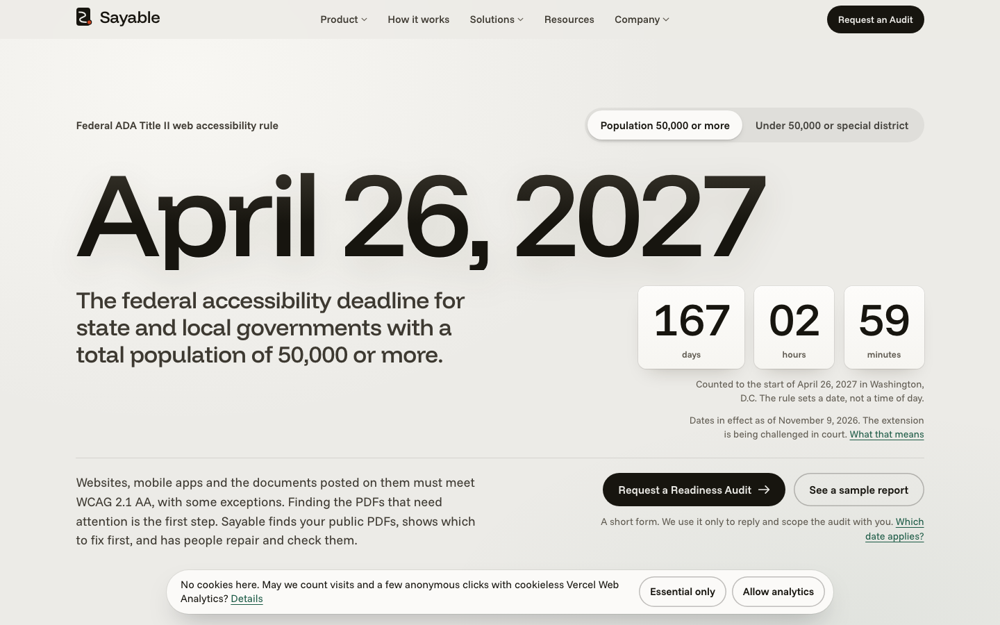
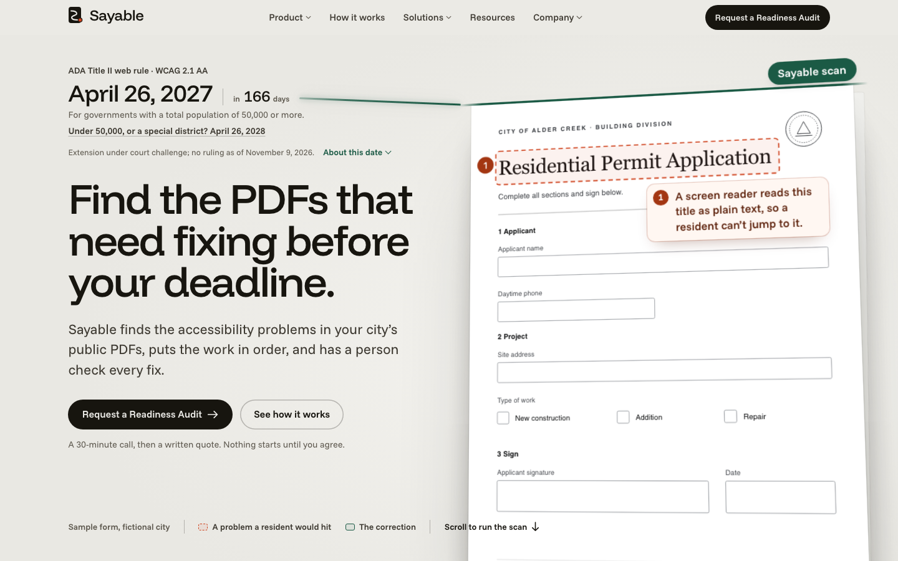
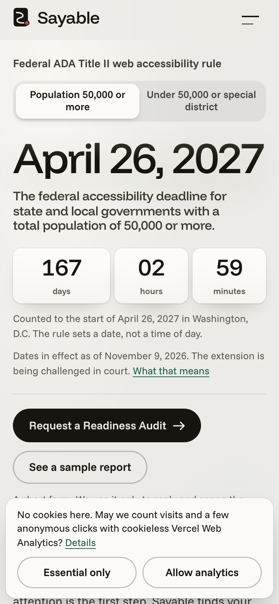
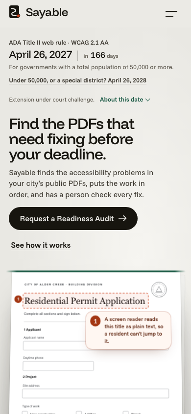
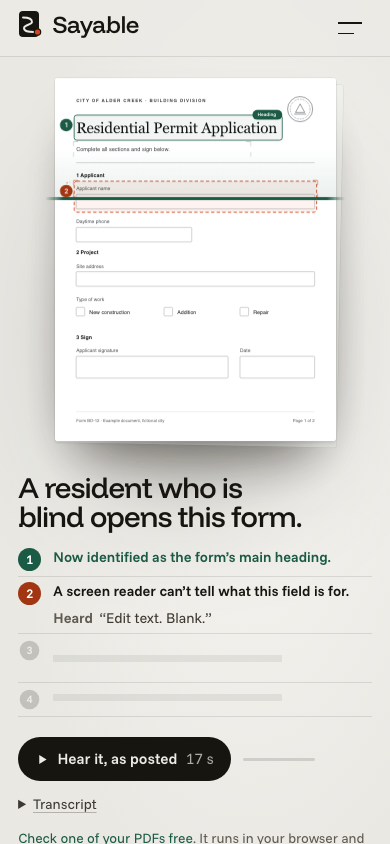
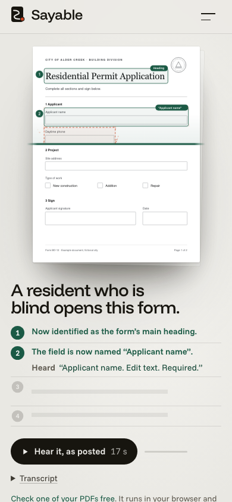
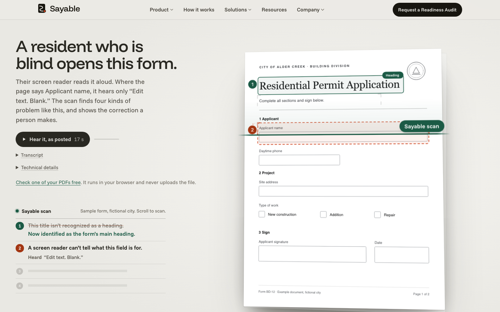
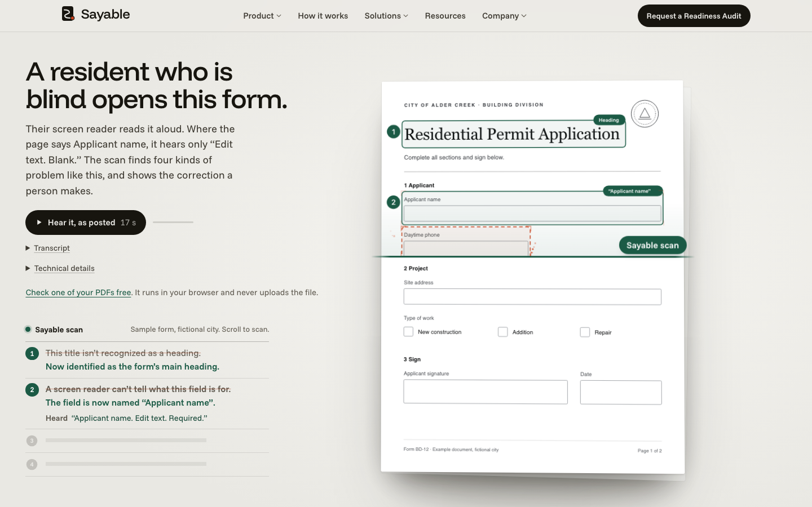

Sayable homepage hero: before and after
Before: November 9 preview (rejected). After: rebuilt hero, production build. 1440 px and 390 px.
Before · 1440
After · 1440 · at rest
Before · 390
After · 390 · at rest
After · 390 · first finding
After · 390 · correction
After · 1440 · first finding
After · 1440 · first correction